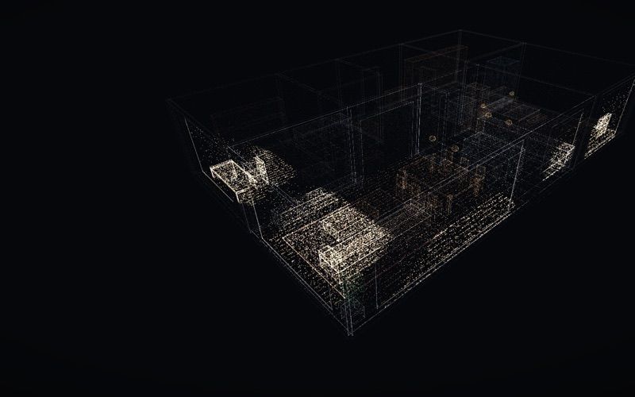
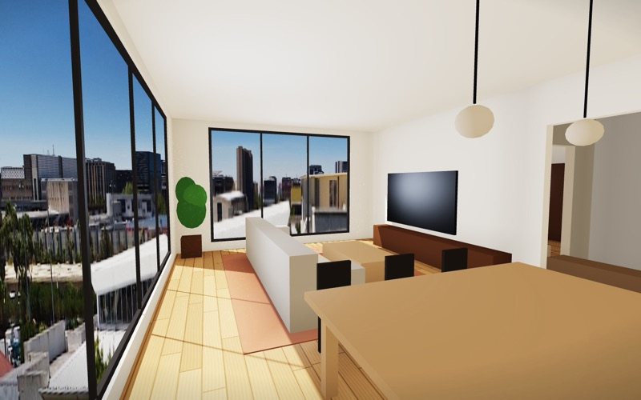
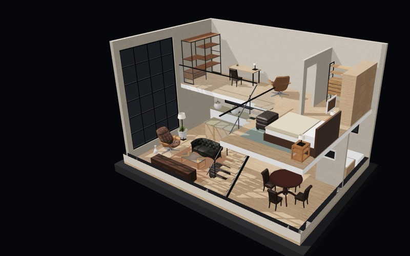
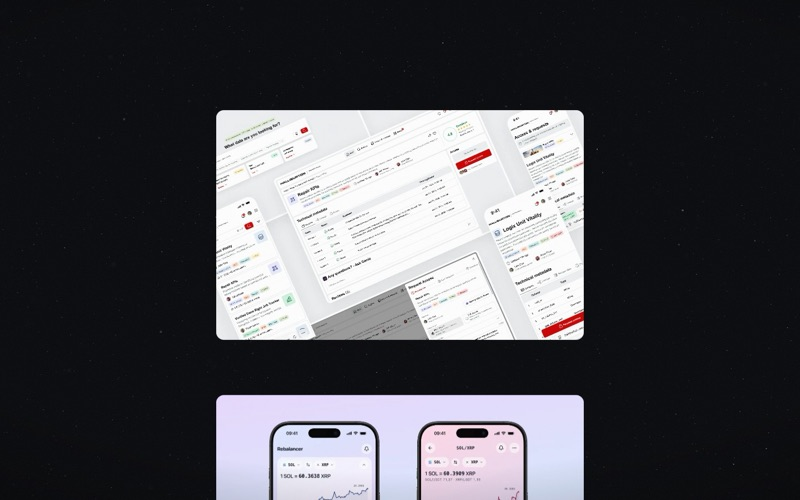
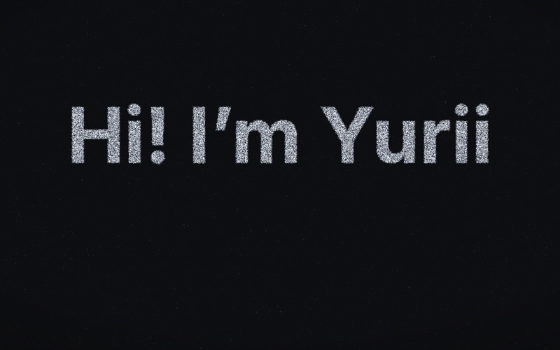
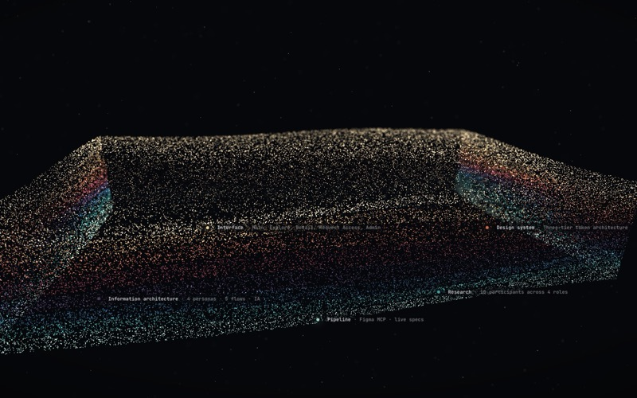

Concepts and studies that aren't on the site, kept here to open, compare and come back to.

From the city at night to the tower, the floor plan and the rooms, all in points, with a June day of sun through the windows.

The same flat walked through at eye height: daylight worked out per window, and a real 360° photograph of a city outside.

A duplex that builds itself as you scroll, then a dollhouse to play with: lift a floor off, move the furniture, change the finishes.

The greeting pours into the layers and the camera dives through them to the work. Now the site's home page.

The greeting and the cases made of matter: the letters break up into the case covers as you scroll.

A flight down into a block of strata, with the work hung in the depth below it.